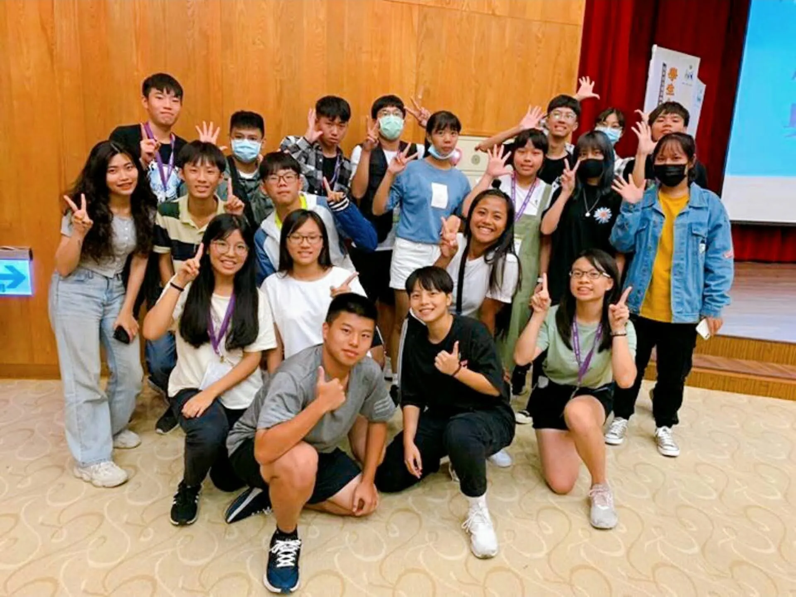
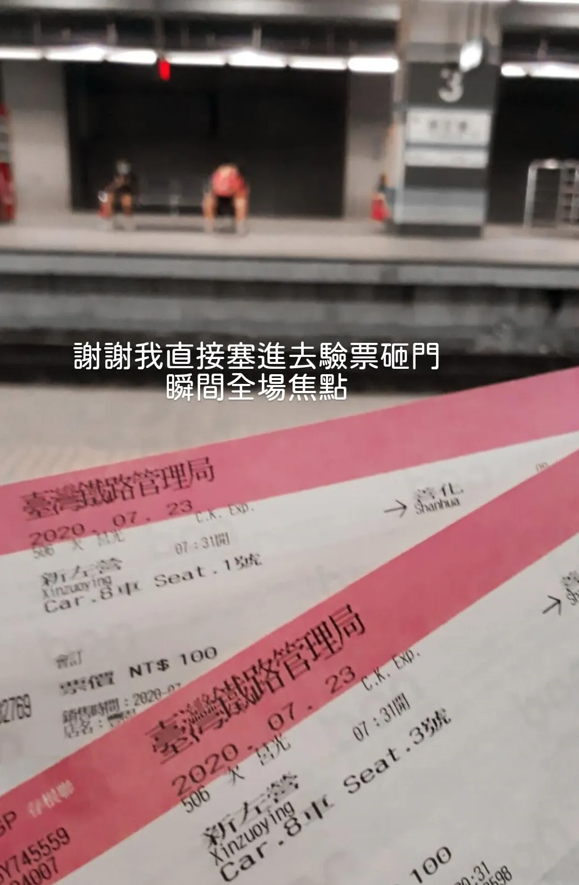

大概在去年 7 月，因緣際會下參加了由國教署主辦的 高級中學學生自治培力營 ，最後在報名截止前一小時才搭上這班培力列車。
報名
朋友早在活動前個禮拜就已經告知我有這項活動，那時因為快段考，不太想理會活動，所以就沒太在意，直到朋友在報名前一天晚上再次提醒我，我才打算起身報名，隔天早上衝去學校找訓育組長、校長簽名蓋章跑流程，報名截止前一小時才掃描上傳完。
報名完成後緊接著就是段考，段考後萬分期待這活動的到來o((>ω< ))o！
去程

我第一次台鐵訂票，以 ibon 取票，並於閘門感應 QRCode 進站，結果我把它塞進驗票機內⋯當作學到經驗好了⋯⋯
塞進去時，看著朋友將票券塞進台鐵驗票閘，原本閘門沒反應，我還真的那麼以為 ibon 的票是直接塞，就跟著塞進去了，結果下一秒兩人的閘門開始狂叫，當下尷尬指數破表。
南區活動舉辦於走馬瀨，有接駁專車於指定地點接送，一早與同行朋友一起搭火車上臺南，出站時稍微有一列在排隊，估計是參加培力營的，朋友暫時離開去廁所的這段時間，人潮瞬間增加到兩、三排之多，回來排隊時我們倆都嚇到。
等待乘車
抵達會場後， 就是 SOP 入座儀式啦～ 我是說報到開幕式。就定位後，因為我們這批是提前抵達的，大約還要再等20分鐘高鐵班次來。我們就先探索環境，組員逐漸到期後由隊輔破冰！
學生權利與CRC
學權議題大亂鬥這節課將重點放在「捍衛自己的學權」，其中有項課程活動叫做「 議題亂鬥，學權Bingo！ 」這項活動請參與學員體檢自己的學校，最後用小組Bingo串聯起來，在這部分三民就出了很大的問題，以下舉我當天活動列出的慢慢說：
- 學校無穿著便服機會：這真的很考驗各間學校的開明度，不開放穿著便服的確沒有違法，各校自訂即可，但**以服儀違規懲罰或愛校服務就是違法的懲處方式（轉彎處罰）**。
- 秩糾於下課與早晨進校會於走廊與盡班抓服儀並登記：根據現場前輩的，基本上連同鞋子也不能管。
- 能力分班：違反統包。
- 朝會不到缺席會被記警告或小過。
- 學校無2日自主規劃運用時間（俗稱免早修）：這有明訂法條可參考，但學校為了各種防堵前幾屆學長姊而遲遲不肯通過免早修，反而利用早修不到或遲到繞道處罰（班導、考試、生輔組愛校服務等）。
- 手機不可於學習節數（上課時間，不包括下課、早修、午休、放學等非正式上課時間）管制。
小組討論
學生議會
學生議會也是學生會組成的一大必備因素之一，而我們學校是班聯會（班級代表聯合會）。其實那時候在講學生議會的時候我自己聽的母颯颯，學生議會這個詞是我因為這次活動第一次聽到，學生議會，能吃嗎？
學生議會大概是我上任後到處去了解學生會的運作機制，與為了修改組織章程翻遍了各校的組織章程才稍稍有點了解。議會的運作真的頗複雜的，當下在場的各位聽到快睡著。最後得出結論： 原來學生議會是現實版的立法院啊！
Day1 上半場課程總結
Day1 下午課程在這邊就告一段落了，接著吃完晚餐會繼續下半場晚上的課程。
主持人也要我們歸納上半場課程的成果與反思，我覺得這是舉辦活動（課程）很重要的環節，不只可以讓主辦方有活動 feedback，學員也可以透過 九宮格反思 整理學到的東西，等等就是刺激的模擬校級會議了（都整理在同一段，在更下面）！。

組織與社群行銷
Day2 一早，吃完早餐就是組織&社群經營的課程，這節課在訓練我們要怎麼維持學生會正常運作，減少紛爭、提高討論效率與化解衝突。
首先，學生會組織本體很重要。在開始前，先與團隊 擬定好年度工作計畫 ，其中區分出 高度重要與 低度重要 的時程表。高度重要不規劃進去學生會會倒，在這節課講師也推薦了大專院校學生會的十大工作重點。
討論時，我們以 一次開一個話題，黏貼 IDEA 便條紙的方式進行，在時限內盡情討論，並將問題或 IDEAs 寫在紙條上，時間到就必須停止討論並收回紙條。在討論過程中，主持人 設定 5 分鐘提醒一次，為時 7 分鐘的討論中， 自己怎麼影響團隊決策 、 團隊是否有人有相同目標、 是否有人扮演統整的角色 。
統整便條紙後，怎麼決定哪件事重要？在討論時，必須遵守 不以投票表決、 組員都能接受、 設定時限達到目標（在下一段，7 分鐘內留下 6 個人）、 他人發表時限內不能打斷或插嘴 。
篩選人力
就剛剛提到學生證年度重要活動，舉例籌辦耶誕晚會對學生會的影響。
耶誕晚會是學生會一年一度的大事，但需要招募一般同學加入耶誕晚會籌備團隊。
學生會年度重要活動
招募幹部的報名表發下後，總共收到了這 9 位同學毛遂自薦，但要在有限時間（7 分鐘）內挑選出 6 個最佳人選， 要從檢討缺點出發，還是從發現優點出發？
我們從著重於 功能性 切入，若與活動不太相關的能力都先忽略掉，並排除可能會影響活動順暢度的人選，能互補的人選再納入考量討論。
如上表，②高三女雖然吸金，但不適合與人溝通打交道在籌備上可能就會出現言語衝突，因此淘汰；
③高三男雖然活動精美品質高，但容易燒錢燒過頭，而這時就能與⑨高二男的金錢控制互補；
⑨高二男雖然控制金錢得當，卻容易稱王，這點大家討論後，覺得 ③高三男相較⑨高二男對整個籌備企劃的威脅性較低 ，因此淘汰⑨高二男。
例如⑦高二女雖然擁有萬人粉絲，在活動傳播上更有效益，卻因為 開會不一定能到這關鍵原因淘汰掉。
開會不一定能到呼應前段②高三女因不適合與人溝通打交道，間接會影響到籌辦進度，因此也剔除溝通不易的人選，並將擁有調節衝突能力的⑤高一女留下。
我們以比較的方式，取代容易指責、投票的方式，讓活動辦得盛大也要辦得有意義。
創造客群
這幾個方法最大好處在於可以迅速找出合適客群，不只要創造從無到有的社群經營，還要圈出有利受眾。
除了像耶誕晚會這種例行活動，很大重點在於能 吸引客群， 製造討論度、 交叉分析法（SWOT）、 座標法、 5A架構 。
模擬校級會議
接續 Day1 下午場課程，終於來到了緊張又刺激的模擬校級會議課程。
模擬校級會議這次選用的議題是廣為人知也是各校敏感議題－服儀，在這節課程中，我們會學到該如何 運用法條條款、 遊說有利方（老師、連署etc）、 避免反對方老師對我們二度傷害，以及練成 穩固立場 的表達口條。
在課程中有提到：校方常為了避免接觸該議題，會運用摸頭式應答，例如時間關係下次再說、有人對本條款（校規）通過有異議嗎？反映後也只會得到摸頭式回應， 通常沒人反駁的了就會通過。
在此要訓練的就是如何 在已知狀況下，做到最大化最穩固的應對措施 ，大致講解完案例後，在場的小組被拆成了好幾個角色：校長、行政人員（各行政主任）、正反方老師組、學生會學生代表（代表該班同學）。
案例說明
市立青本高中開放學生在校園中穿班服。但對於班服的樣式，該校《服裝穿著規定》第5 條規範：「班服設計需於服裝上標示校徽、校名或TBHS 等擇一字樣，設計稿由導師審核後，送學務處生輔組備查。」A 班設計班服，因素來嫌惡學校管教方式，決定只在班服正面印上大大的校徽並打上紅色大叉叉。導師採取放任態度，於是通過導師審核。稿件送到教官室，教官隨即認為妨害校譽，打叉的校徽並非標示校徽，以違反班服辦法為由，將該班班⻑叫到教官室斥罵，警告其不要依照該設計製作班服，否則「有你好看的」。該班聽到班⻑被訓斥，不服教官，群情激憤，向學生會抗議，要求學生會在最近一次的「青本高中服儀委員會」上為該班發聲。
－前情提要
有你好看！遊說討論時間
進行完課程後就開始小組討論我們的應對措施，Day1 晚～Day2 中午課程這段時間是給我們自由運用討論的，我們抓緊時間討論出對策。
根據上方幻燈片及引文整理手邊出現有資源，我們的角色被分配到學生代表（吳同學），我們大致討論出這幾項我們可以鑽的漏洞：
- 校規明確性不足
- 在服儀解禁的時代下怎麼還會審查服儀？
- 學校認為這會毀壞校譽
- 無法忘記曾經的服儀
- 這並非萬靈丹
- CRC第13條兒童表意權
- 沒有管道發表學生方意見
- 法規明定「備查」即可，怎麼還可以退回？
- 學生本意真的有意？
- 裝可憐給校方看
- 我們本意並不是這樣的，只是希望學校可以…
- 學校這樣處分，但學生真的本意是想跟學校做對嗎？
- 跟風
- 訂定服儀規範時沒有學生代表參與
- 修改規範
在 Day1 晚這段時間，我們討論好後有一小段的商討遊說時間，可以跟各角色討論以遊說反駁，商討後稍微檢討了一下要改變的缺失及應對方式，最後就是大家的 就寢 夜生活 吃宵夜 時間。
意外討論時間
不對，是原本要夜遊沒成功的吃消夜時間！
摸頭式會議？
根據青民協歷年的統整，學校的摸頭會議大致可以分成五類： 推給過去型、 預設立場型、 違法亂紀型、 摸頭說謊型、 有苦難說型 。
- 先來談談推給過去型好了，學校或許會用「學長姊早已發生、提問過的問題，怎麼到現在還在提」等理由拒絕答覆與處理。而這時就可以叫學校認清事實，「過去是過去，現在是現在，面對可以現實嗎？？！」，這時就要加強論述現今與過去的差異，並詢問學校具體困難在哪，以及可以怎樣改善。
- 第二個是預設立場型，例如「你們這幾票選出來的，就能代表全體學生嗎，搞不好其他學生也反對學生自治團體的意見。」這時要注意不要陷入學校的立場預設！趕快把重點拉回「提案的可行、正當性」，而不是跟著學校檢討過往。
- 接著是違法亂紀型，例如開服儀委員會時，學校就可能覺得「學生自治組織提的教育部服儀規定，管不到私校。校有校規，尊重校規就是學⽣的本分！」，這部分就必須先查好校規，才不會正式上陣時手足無措。
- 第四個是摸頭說謊型，「你們的意見很重要，我們會帶回去思考。」這些語句，都有可能是實際開會時會遇到的摸頭現象，思考過後的結果才是關鍵！重要會談要存證，何時有結果 、結果是否公開透明 都是會談後要注意的重點，才不會真的被摸頭蒙混過去。
- 最後是有苦難說型，上課有提到學校會用求情的方式，例如「你們提的案⋯⋯我跟你們講，是真的有困難，⽽不是學校不聽你們的。」第一時間聽到，或許學校真的有困難，但反過來思考，學校如果照著提案訴求執行，會經過哪些程序，中間的機會成本是否過高，或很困難？試著找出突破點，與學校協商出折衷方案會是最好的現象。
會議後，開會檢討時間
上述是校級會議容易出現的情況，萬一提案 吵 協商輸了，會後的檢討會可以往討論 更好的突破點為主軸。會後檢討會除了抓準突破點外，無論哪種類型，都要儘量 避免批評性的檢討會 ，糾錯是必然過程，但是為了未來調整。檢討會中可以以 解釋會議過程及討論內容為主軸，最後 擬定後續策略及方向 。
從模擬校級會議中我們學到幾招，先釐清會議校方提出質疑的內容 ，發現有 無法發言、 師長無限迴圈鬼打牆、 會議失焦、 以各種不相干理由打斷會議等狀況。統整後發現，其實面對校級會議能透過預先演練，在會議上達到更穩健的效果。經過這次校級會議後， 聽清楚陷阱、預先 準備足夠資料（例如法案或各校實行佐證資料）、 多練習發表口條、 抓準提案突破點 都是開會前不可或缺的演練橋段。
更細看會議後，學校方很在意 校譽，對於學生會的角度，校譽固然重要，目標更要放在 突破性關鍵訴求 ，盤點資源、撐出提案的正當性，進一步向學校主張合理性。對我而言，既然都能進入校級會議，就要把握這個機會發聲。
體制內外行動倡議
學生權益固然重要，除了體制內的檢討會、法條可以突破，還能試著尋求體制外的協助。
講白話一點，就是把事情吵大吧（當下的理解）。應該說尋求更有力的協助，取代與學校無異議爭吵不會改變的事實，除了可以 發起連署， 開記者會、尋求 民間團體協助 、投 國教署署長信箱 也都是可以嘗試選擇。
綜合心得
最後來說說我的心得吧！在這次活動中學到最重要的 貼便條紙 ，貼便條紙討論最大的好處就是 避免同時間異言堂造成想法混亂衝突，討論當下也能更有條理一步一步剖析。
還有階段性課程後的 九宮格反思 ，九宮格反思在短時間內接收到大量資訊特別有效，快速吸收後，再快速依照類別分類寫下，除了課程當下的吸收， 寫下歸納後對課程整體架構掌握度更加提升穩固 ，這大概也是課後隨堂考的由來吧。
模擬校級會議後，在這高強度密集的操練運轉下，大家都累透了，這兩天真的聚精會神下很吃體力。這趟學到了很多 答辯技巧 ，無論是發聲前，會議當下或事後檢討，在面對大場合的該以怎樣的態度呈現，私下的學生會經營溝通也是不可缺的重點之一。
最後的最後，身為學生會成員之一，直接面對的是學校與同學，在這些壓力與衝擊下，浩翔在活動最後送了一句話給我們，當下特別有感觸：
我們都在往更友善的路上走著，這條路很崎嶇，至少我們有彼此。
－人本教育文教基金會專案秘書 廖浩翔